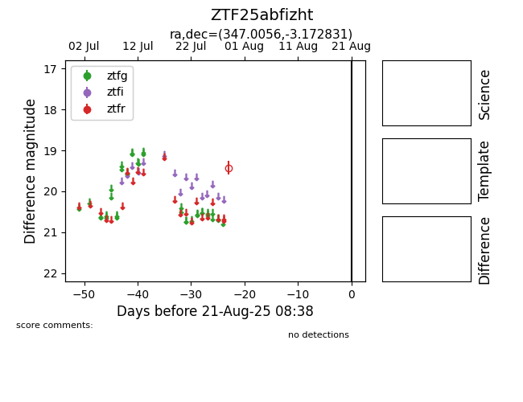

Target ZTF25abfizht at 2025-08-21 08:38, see:
FINK: fink-portal.org/ZTF25abfizht
Lasair: lasair-ztf.lsst.ac.uk/objects/ZTF25abfizht
ALeRCE: alerce.online/object/ZTF25abfizht
alt names
ZTF25abfizht (ztf,alerce)
coordinates:
equatorial (ra, dec) = (347.0056,-3.17283)
galactic (l, b) = (72.5518,-55.58026)
photometry
